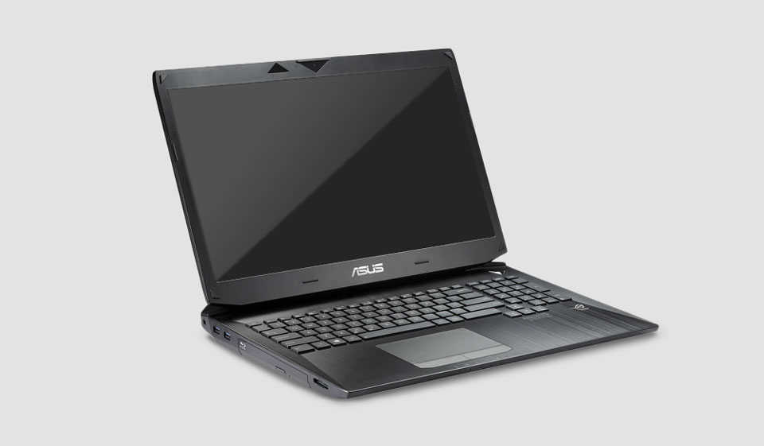
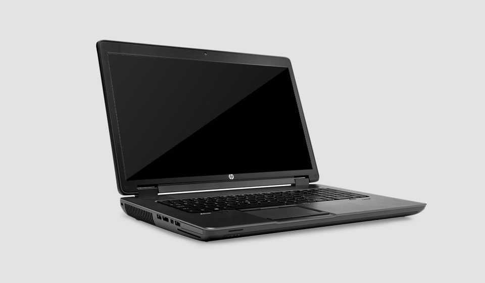

A laptop by any other name is a laptop. Unless it’s a tablet. Or a gaming laptop. Or a workstation. Or a hybrid. Or a 2-in-1. Now that we bring it up, all laptops are not made the same.
They can be modified or configured to match any need, and can be as unique as the consumer who buys them.

What do you need your laptop for, some gaming? Maybe some light video editing (or even some heavy video editing)? Are you an art or design student who cannot live without Photoshop, or a photographer on the go who needs a laptop as a kind of digital assistant? Let’s take a look at some scenarios and give you a simple breakdown that will help you select the right laptop for you (or as a gift for someone else).
 Download laptops